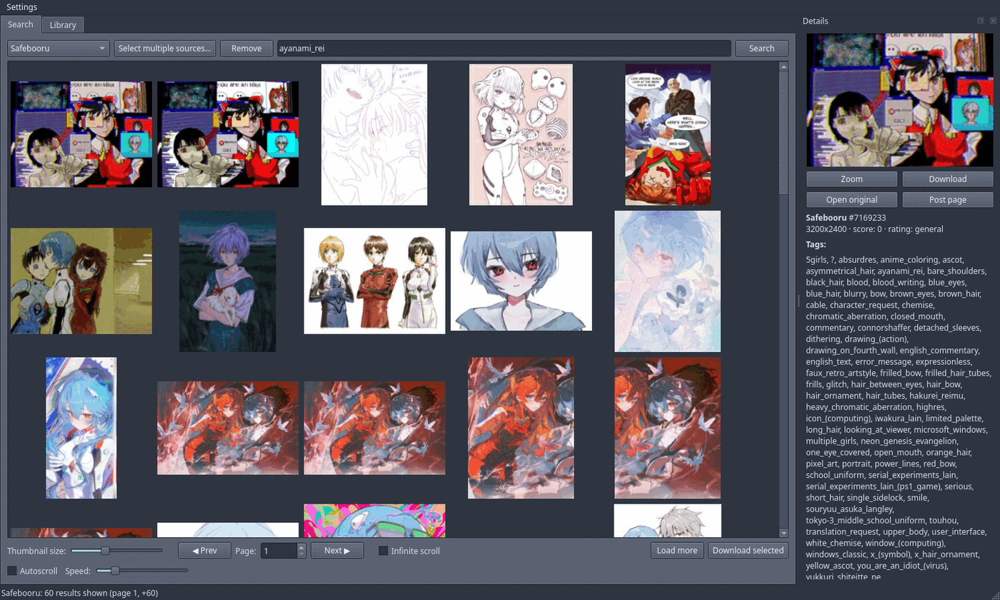
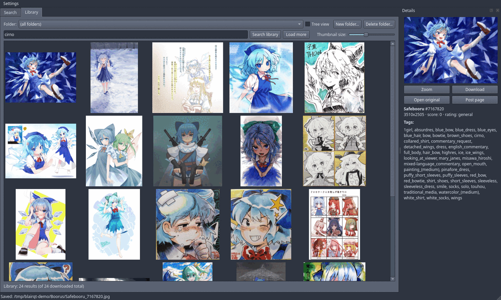

B.LAIR_QT is native software for browsing boorus with a local gallery. What separates it from other booru clients is that the gallery acts as the booru repository itself: it respects source and tags, and lives in ordinary folders your Linux file manager already understands.
It searches several boorus at once and downloads the originals; tags go into a SQLite index next to the files. Delete the database and the files are still there, still sorted, still openable by anything else on the system.
Boorus that are not on the list are usually one URL away: the app probes the site against six engines and picks the one that fits. Anything else takes a short Python plugin — or, for sites with no API at all, the bundled HTML-scrape bridge.
What it does not do: play video, log into accounts, upload anything, or sandbox plugins.


Arch Linux:
makepkg -siGentoo — drop the ebuild into a local overlay:
mkdir -p /var/db/repos/local/media-gfx/blairqt
cp blairqt-0.3.0.ebuild /var/db/repos/local/media-gfx/blairqt/
ebuild /var/db/repos/local/media-gfx/blairqt/blairqt-0.3.0.ebuild manifest
emerge -av media-gfx/blairqtblairqt-9999.ebuild builds from git master instead.
USE=python pulls an interpreter for script plugins;
USE=test runs the suite during the merge.
Anything else — needs Qt 6 (Widgets, Network, Concurrent, Sql, LinguistTools), CMake 3.21+ and a C++20 compiler:
cmake -S . -B build -G Ninja -DCMAKE_BUILD_TYPE=Release
cmake --build build
./build/blairqtOn first start a welcome screen asks which sources to load. Nothing explicit is enabled unless you pick it. Type tags, hit Enter, drag the slider if the thumbnails are the wrong size. Right-click a post to download it or to blacklist a tag.
Six generic parsers — Danbooru, Gelbooru/dapi, Moebooru, e621, Philomena, Szurubooru — cover dozens of sites without a class per site. Add custom booru probes a URL and works out which one fits.
Several sources can be merged into one gallery. Paging, infinite scroll and autoscroll are three ways to move through results; picking one disables the controls that stop making sense.
Cloudflare-gated Gelbooru sites accept a cookie and User-Agent you paste in. Sites with no API at all can go through the bundled HTML-scrape bridge — those posts arrive without tags, rating or dimensions, which is the price of scraping HTML.
Every request, status code and response snippet lands in the network log dock. When a site misbehaves, that dock is the first place to look.
Downloads are indexed in SQLite with an FTS5 tag index and written into real nested folders — the same folders Dolphin or Thunar show. Move files between them from inside the app and the tags follow; re-downloading a post you already have is detected and skipped.
Each image also gets a hidden tags sidecar next to it — image.png
gets .image.png.txt, one line of space-separated tags. It follows
the file when you move it, and it is what lets another tool (or you, with
grep) read the tags without touching the database. The metadata
is stored as .txt as well, because why not — txt is cheap.
Search the library by tag, filter by folder, with or without subfolders. Zoom opens local files instantly, animated GIFs included.
A tag blacklist, global or per source, editable in Settings or straight
from a post's context menu. Sites that understand -tag get the
exclusions pushed into the query; the rest are filtered before they reach the
grid.
Matching is exact: solo does not hide solo_focus.
It can apply to the library too, if you want the same rules on what you
already downloaded.
A new booru engine is one Python file. No C++, no rebuild:
def build_search_request(base_url, tags, page, per_page) -> dict:
"""Return {"url": ..., "headers": {...}}."""
def parse_response(body, base_url) -> list[dict]:
"""Return post dicts: id, file_url, preview_url, sample_url,
post_page_url, tags (list), rating, score, width, height."""
def supports_tag_exclusion() -> bool: # optional
"""True if the site understands "-tag", so the blacklist can be
applied in the query instead of only filtering the results."""Add it through Add custom booru → Plugin script; with
Auto-detect on, the script is tried automatically. Tracebacks show up in the
dialog log and the network log dock. Plugins need python3 on
PATH, and some need their own modules — the Newgrounds example in
examples/ wants argon2-cffi.
For Gelbooru-engine sites with no dapi. Not started
automatically:
pip install flask cloudscraper beautifulsoup4
python3 tools/html_scrape_bridge.pyIt listens on 127.0.0.1:8765. Tick This site has no API
(dapi) when adding the source.
Themes are JSON over QPalette; 20 curated ones ship with the
app and the system default is one click away. Interface languages: Polish,
English, German, Danish, Russian, following the system language when it is one
of those. Window and dock layout survive a restart.
The app writes inside its own data folder and folders you explicitly grant,
and nowhere else. That is application discipline, not a sandbox — a plugin you
add runs as you do. Stored API keys and cookies
(custom_sources.json) are written owner-only (0600).
No network, no visible window:
ctest --test-dir build --output-on-failureThey cover blacklist matching, tag input, response parsing, library paging and the rule that a plugin never blocks the GUI thread.
~/.config/blairqt/blairqt.conf~/.local/share/blairqt/blairqt/~/.cache/blairqt/Issues and merge requests are welcome. Before sending a patch, run the tests — they take a second and need no network and no display:
ctest --test-dir build --output-on-failureWelcome, and I will merge it. I do not run Windows, so testing it is yours.
The code does not stand in the way. There are no POSIX calls anywhere,
everything goes through Qt, and the binary already looks for its translations
and plugin_runner.py next to itself — so a portable layout
(blairqt.exe beside translations\ and
plugin_runner.py) works with no changes at all.
What is left to do:
python3 to whatever Python is called there
(python.exe, or the py -3 launcher),.txt neighbour,windeployqt and ship a zip or an
installer.Copyright (c) 2026 re-v0. Mozilla Public License 2.0 — see the
LICENSE file in the source tree, which is the unmodified Mozilla
text.
MPL copyleft is per file: you may combine these files with code under another license, but modifications to the files themselves stay MPL and stay open.